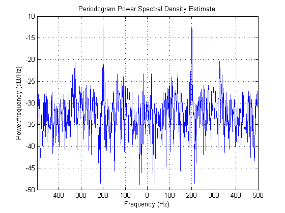
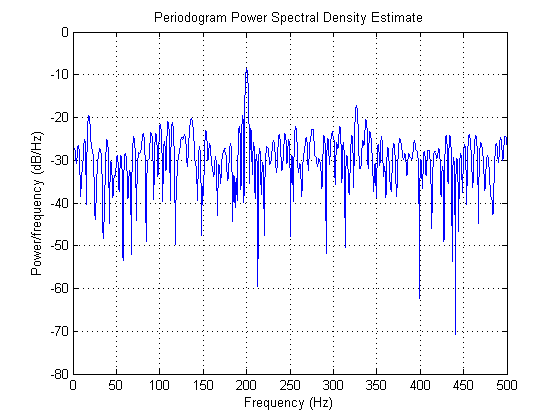
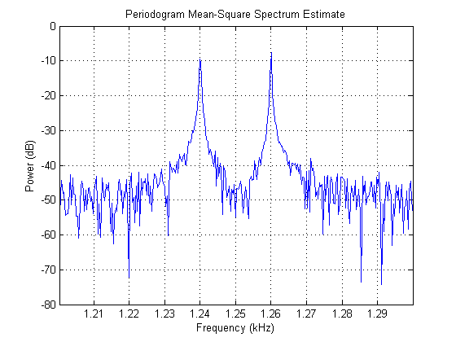
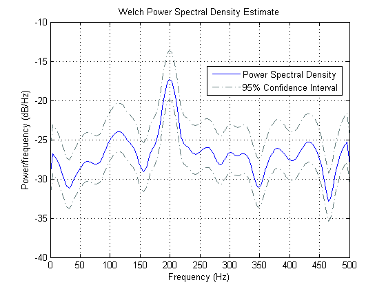
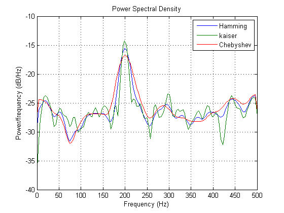

スペクトル解析オブジェクトのご利用の前に
このデモでは、スペクトル解析のオブジェクト指向パラダイムについて説明します。
目次
はじめに
Signal Processing Toolbox™ は、古典的な (ノンパラメトリックな) 手法とパラメトリックな手法、固有ベクトル (または部分空間) 手法を含むスペクトル解析を実行するためのさまざまなコマンド ライン関数を提供します。 さらに、これらの機能に、使いやすさを向上するためのオブジェクトと、可視化機能が加わりました。 以下のスペクトル解析アルゴリズムを表す 9 つのクラスがあります。
ピリオドグラム
Welch
MTM (Thomson マルチテーパ法)
Burg
共分散
修正共分散
Yule-Walker
MUSIC (多重信号分類)
固有ベクトル既定のスペクトル オブジェクト
入力引数を指定せずにスペクトル オブジェクトをインスタンス化できます。 たとえば、次の構文は、既定の設定を使用して既定のピリオドグラム スペクトル オブジェクトを作成します。
h = spectrum.periodogram
h =
EstimationMethod: 'Periodogram'
WindowName: 'Rectangular'
オブジェクトのインスタンス化時にパラメーターを指定
オブジェクトの作成時にパラメーター値を指定するには、ヘルプにリストされている順序でパラメーターを指定する必要があります。一例として、"help spectrum.welch" と入力します。Welch オブジェクトをインスタンス化する場合、ウィンドウ名を指定せずにセグメント長を指定することはできません。ただし、このデモの後半でわかるように、オブジェクトの作成後はいつでも任意のパラメーターを設定できます。
作成時にオブジェクトのパラメーター値のいくつかを指定する例を次に示します。
h = spectrum.welch('kaiser',66,50)
h =
EstimationMethod: 'Welch'
SegmentLength: 66
OverlapPercent: 50
WindowName: 'Kaiser'
Beta: 0.5000
オブジェクトのインスタンス化後にプロパティ値を変更
ドット表記または set メソッドのいずれかを使用して、EstimationMethod を除くすべてのパラメーターの値を設定できます。ドット表記法を使用して、上記で作成した Welch オブジェクトのウィンドウを設定する方法を次に示します。
h.WindowName = 'Chebyshev'
h =
EstimationMethod: 'Welch'
SegmentLength: 66
OverlapPercent: 50
WindowName: 'Chebyshev'
SidelobeAtten: 100
チェビシェフ ウィンドウはサイドローブの減衰パラメーターを持つことに注意してください。これは、プロパティのリストに動的に表示されます。
ウィンドウ パラメーターを指定するには、ウィンドウ名とパラメーター値をセル配列で囲まなければなりません。チェビシェフ ウィンドウのサイドローブ減衰値を指定する方法を次に示します。
h = spectrum.welch({'Chebyshev',80})
h =
EstimationMethod: 'Welch'
SegmentLength: 64
OverlapPercent: 50
WindowName: 'Chebyshev'
SidelobeAtten: 80
スペクトル推定法
スペクトル オブジェクトの最も重要なメソッドの一部は、psd、msspectrum および pseudospectrum です。psd メソッドは、パワー スペクトル密度 (PSD) を返します。msspectrum メソッドは、ピリオドグラムまたは Welch スペクトル推定法によって計算された平均二乗 (パワー) スペクトル (MSS) を返します。pseudospectrum メソッドは、MUSIC または固有ベクトル推定法によって計算された擬似スペクトルを返します。これらのメソッドはすべて、出力引数が指定されていない場合に、スペクトルをプロットします。
PSD は、単位周波数あたりのパワーの尺度であるため、単位はパワー/周波数です。たとえば、一連の電圧測定値について、PSD の単位は volts^2/Hz です。一方、MSS は、特定の周波数におけるパワーの尺度であり、単位はパワーです。信号が電圧測定値であるこの例を続けると、単位は volts^2 になります。
これら 3 つのメソッド (psd、msspectrum、pseudospectrum) はすべて同じ構文を持ちます。これらは、最初の入力としてスペクトル オブジェクトを必要とし、2 番目の入力引数としてパワーを測定する信号を必要とします。次に、オプションで、サンプリング周波数、スペクトル範囲、FFT 点の数などについてプロパティと値のペアを指定できます。
あるいは、スペクトル オブジェクトに対して psdopts メソッドを呼び出すことができます。このメソッドは、これらと他のパラメーターの既定値を持つオプション オブジェクトを返します。以下に例を示します。
h = spectrum.welch;
hopts = psdopts(h)
hopts =
FreqPoints: 'All'
NFFT: 'Nextpow2'
NormalizedFrequency: true
Fs: 'Normalized'
SpectrumType: 'Onesided'
CenterDC: false
ConfLevel: 'Not Specified'
ConfInterval: []
は、psd メソッドに渡すことができるオプション パラメーターのリストを含む Hopts オプション オブジェクトを生成します。このオプション オブジェクトは、psd メソッドに対する複数の呼び出しで使用できるようになりました。
次に、Hopts オプション オブジェクトのいずれかのプロパティの値を設定し、Hopts を psd メソッドに渡すことができます。これに対応する msspectrumopts および pseudospectrumopts メソッドが存在し、それぞれ、msspectrum および pseudospectrum メソッドで使用するオプション オブジェクトを返します。
スペクトル解析の例
この例では、ピリオドグラム スペクトル オブジェクトを使用して、ノイズを含む 200 Hz の余弦信号のパワー スペクトル密度を計算およびプロットします。
% Create signal. Fs = 1000; t = 0:1/Fs:.3; randn('state',0); x = cos(2*pi*t*200)+randn(size(t)); % A cosine of 200Hz plus noise % Instantiate spectrum object and call its PSD method. h = spectrum.periodogram('rectangular'); hopts = psdopts(h,x); % Default options based on the signal x set(hopts,'Fs',Fs,'SpectrumType','twosided','CenterDC',true); psd(h,x,hopts)
Fs が指定されているため、PSD は単位が Hz の周波数に対してプロットされました。 Fs が指定されていない場合、単位がラジアン/サンプルの周波数が使用されます (その場合、PSD の単位はパワー/(ラジアン/サンプル) になります)。 また、SpectrumType を twosided として指定することは、ナイキスト間隔全体で計算されたスペクトルを必要とすることを意味します。
出力引数を指定した場合、psd メソッドは、次の例に示すように、PSD データ オブジェクトを返します。 PSD データ オブジェクトの詳細は、このドキュメンテーションの「スペクトル データ オブジェクト」の節を参照してください。
% Use a long FFT for integral approximation accuracy set(hopts,'NFFT',2^14); hpsd = psd(h,x,hopts)
hpsd =
Name: 'Power Spectral Density'
Data: [16384x1 double]
SpectrumType: 'Twosided'
NormalizedFrequency: false
Fs: 1000
Frequencies: [16384x1 double]
ConfLevel: 'Not Specified'
ConfInterval: []
返された PSD データ オブジェクトには、他のパラメーターに加えて、スペクトル データ、スペクトルが計算された周波数、サンプリング周波数が含まれています。PSD データ オブジェクトのメソッドには、plot、avgpower などがあります。plot メソッドは、オブジェクトに格納されているスペクトル データをプロットします。avgpower メソッドは、積分の四角形近似を使用し、オブジェクトに格納されている PSD データを使用して信号の平均パワーを計算します。
avgpower メソッドは、PSD 曲線の下の面積である信号の平均パワーを返します。
avgpower(hpsd)
ans =
1.3162
片側 PSD
上の例では、Hopts オプション オブジェクトを介して psd メソッドの呼び出しで twosided を指定しました。 しかし、実信号の場合、既定で onesided PSD が返されます。 同様に、出力引数が指定されなかった場合、プロットにはナイキスト間隔の半分しか表示されません (残りの半分は重複した情報です)。
set(hopts,'SpectrumType','onesided'); psd(h,x,hopts)
ナイキスト間隔の半分しか表示されていなくても、これには合計パワーが含まれていることに注意してください。つまり、PSD 曲線の下を積分すると、合計平均パワーが得られます。これを片側 PSD と呼びます。 最後の例を続けて、上記で twosided PSD を使用したときと同じになる平均パワーを測定してみましょう。
hpsd = psd(h,x,hopts);
avgpower(hpsd)
ans =
1.3162
周波数ベクトルを使用するスペクトル
信号のパワー スペクトルが評価される周波数のベクトルを指定するように、dspopts.spectrum オブジェクトを設定できます。
この例では、msspectrum オブジェクトを使用して、1.24 kHz および 1.26 kHz の成分を、10 kHz の成分を持つ余弦に分解します。
% Generate signal. randn('state',0); Fs = 32e3; t = 0:1/Fs:2.96; x = cos(2*pi*t*10e3)+cos(2*pi*t*1.24e3)+cos(2*pi*t*1.26e3)... + randn(size(t)); nfft = (length(x)+1)/2; f = (Fs/2)/nfft*(0:nfft-1); % Generate frequency vector % Instantiate spectrum object and call its PSD method. h = spectrum.periodogram('rectangular'); hopts = psdopts(h,x); % Default options based on the signal x set(hopts,'Fs',Fs,'SpectrumType','twosided'); hopts.FreqPoints = 'User Defined'; hopts.FrequencyVector = f(f>1.2e3 & f<1.3e3); msspectrum(h,x,hopts)
信頼区間を持つスペクトル推定値
スペクトル推定値の信頼区間を求めるには、信頼水準を指定します。 この機能は psd および msspectrum メソッドで利用できます。
この例では、95% の信頼水準について信頼区間を計算します。
% Create signal. Fs = 1000; t = 0:1/Fs:.296; x = cos(2*pi*t*200)+randn(size(t)); % A cosine of 200Hz plus noise % Confidence Level p = 0.95; % PSD with confidence level h = spectrum.welch; hpsd = psd(h,x,'Fs',Fs,'ConfLevel',p) plot(hpsd)
hpsd =
Name: 'Power Spectral Density'
Data: [129x1 double]
SpectrumType: 'Onesided'
NormalizedFrequency: false
Fs: 1000
Frequencies: [129x1 double]
ConfLevel: 0.9500
ConfInterval: [129x2 double]
 スペクトル データ オブジェクト
psd、msspectrum および pseudospectrum データ オブジェクトを直接インスタンス化することもできます。 これらのオブジェクトは、既存のスペクトル データの保持に使用できます。また、これらのオブジェクトにより、プロット機能を使用できます。 これらのオブジェクトは、各列が異なるスペクトル推定値である行列形式のデータも受け入れます。
この例では、3 つの異なるウィンドウを使用して、実信号のパワー スペクトル密度を推定します。 次に、これら 3 つのスペクトルが行列として格納されている PSD データ オブジェクトを作成し、その plot メソッドを呼び出して結果をグラフィカルに表示します。
% Create signal. Fs = 1000; t = 0:1/Fs:.296; x = cos(2*pi*t*200)+randn(size(t)); % A cosine of 200Hz plus noise % Construct a Welch spectrum object. h = spectrum.welch('hamming',64); % Create three power spectral density estimates. hpsd1 = psd(h,x,'Fs',Fs); Pxx1 = hpsd1.Data; W = hpsd1.Frequencies; h.WindowName = 'Kaiser'; hpsd2 = psd(h,x,'Fs',Fs); Pxx2 = hpsd2.Data; h.WindowName = 'Chebyshev'; hpsd3 = psd(h,x,'Fs',Fs); Pxx3 = hpsd3.Data; % Instantiate a PSD data object and store the three different % estimates since they all share the same frequency information. hpsd = dspdata.psd([Pxx1, Pxx2, Pxx3],W,'Fs',Fs)
hpsd =
Name: 'Power Spectral Density'
Data: [129x3 double]
SpectrumType: 'Onesided'
NormalizedFrequency: false
Fs: 1000
Frequencies: [129x1 double]
ConfLevel: 'Not Specified'
ConfInterval: []
plot(hpsd);
legend('Hamming','kaiser','Chebyshev');
